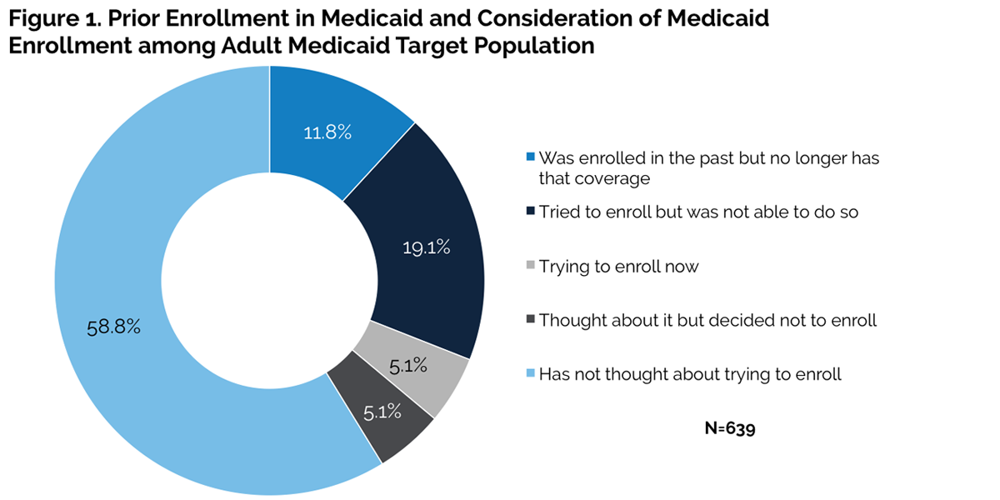
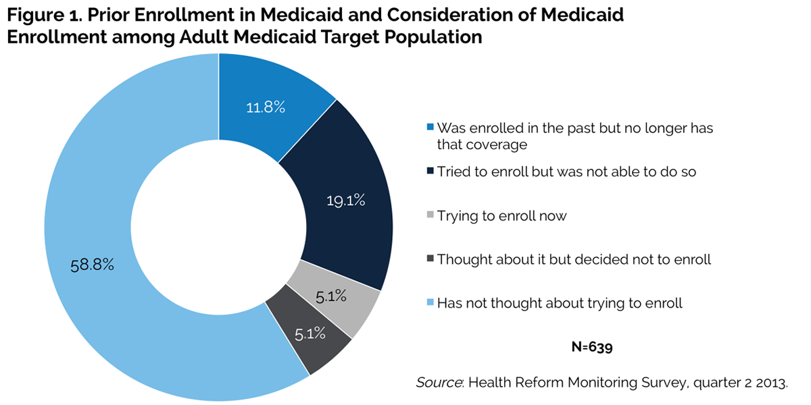

|  |
|
||||||||||||||||||||||||||||||||||||||||||||||||||||||||||||||||||||||||||||||||||||||||||||||||||||||||||||||||||||||||||||||||||||||||||||||||||||||||||||||||||||||||||||||||||||||||||||||||||||||||||||||||||||||||||||||||||||||||||||||||||||||||||||||||||||||||
Uninsured Adults Eligible for Medicaid and Health Insurance Literacy
Genevieve M. Kenney, Michael Karpman, and Sharon K. Long
As major provisions of the Patient Protection and Affordable Care Act (ACA) take effect in January 2014, millions of uninsured adults under age 65 will gain access to new health insurance coverage options. These will be available through the establishment of health insurance Marketplaces for the small group and nongroup markets, the availability of subsidies to offset premiums and out-of-pocket cost sharing in the Marketplaces, and the expansion of Medicaid eligibility (Congressional Budget Office 2013).1 States can choose to expand Medicaid to adults with incomes up to 138 percent of the federal poverty level (FPL), which is the ACA's Medicaid eligibility cutoff.2 According to the most recent information released by the Centers for Medicare and Medicaid Services, 25 states and the District of Columbia will be expanding Medicaid in January 2014.3 Even with only half of states planning on expanding Medicaid at this point in time, over 9 million uninsured adults will be eligible for Medicaid in 2014.4
A key question is how successful enrollment efforts under the ACA will be at reaching uninsured adults who will become newly eligible for Medicaid. Historically, enrollment in Medicaid coverage has been lower for adults than for children, with substantial variation across states (Kenney, Lynch, et al. 2012; Sommers and Epstein 2010; Sommers et al. 2012). Approximately two-thirds of nonelderly adults without private coverage who currently qualify for Medicaid are enrolled (Kenney, Lynch, et al. 2012). This brief explores prior experiences with Medicaid among low-income, uninsured adults targeted by Medicaid under the ACA and assesses this population's understanding of basic health insurance terms and the sources of information they would use for making health insurance decisions.
Focus of the Analysis
This brief focuses on uninsured adults with family incomes at or below 138 percent of FPL (i.e., the adult Medicaid target population), many of whom will be newly eligible for Medicaid in states that opt for its expansion. It uses the Health Reform Monitoring Survey (HRMS) to analyze the pre-ACA experience of the adult Medicaid target population with Medicaid, Medical Assistance, the Children’s Health Insurance Program (CHIP), or any other state- or government-sponsored assistance plan based on income or disability (hereafter, this list is simply referred to as Medicaid). The analysis draws on data collected from June to July 2013 from a sample of adults age 18–64 (i.e., nonelderly adults). Family incomes are defined based on the “health insurance unit,” which includes respondents, their spouses, and any children or stepchildren under age 19 living with them. The ratio of income to the FPL is based on health insurance unit size. In 2013, 138 percent of FPL for a family of four was about $32,500.
We asked HRMS respondents with incomes below 400 percent of FPL who are not currently enrolled in Medicaid whether they have considered obtaining coverage through Medicaid. We asked the subgroup of respondents who had thought about enrolling, had tried or are currently trying to enroll, or had been enrolled in the past to provide the main reason they are not currently enrolled in one of these plans. We asked all respondents to indicate their level of confidence in their understanding of basic insurance terms—premiums, deductibles, co-payments, coinsurance, maximum annual out-of-pocket spending limits, provider networks, covered services, annual limits on services, and excluded services—and to identify which sources of information they would use to select a health insurance plan.
What We Found
Just over one in ten low-income, uninsured adults targeted by Medicaid under the ACA report actual Medicaid enrollment in the past, and just over one-third have had prior Medicaid enrollment or application experience or are currently trying to enroll in Medicaid (figure 1). The roughly one-third (36.1 percent) of the adult Medicaid target population with prior or current experience trying to enroll in Medicaid encompasses three subgroups: those enrolled in the past who no longer have coverage (11.8 percent), those who tried to enroll but were not successful (19.1 percent), and those who are currently trying to enroll (5.1 percent). Most of the rest (58.8 percent of the total) said they had not thought about enrolling. Only 5.1 percent had thought about it but decided not to enroll. 
Most of those with prior experience enrolling in or trying to enroll in Medicaid said they were not enrolled now because of actual or perceived barriers to eligibility (table 1). For those in the adult Medicaid target population with some Medicaid experience (i.e., who have either considered enrolling but decided not to, attempted to enroll, or been enrolled in the past), ineligibility for coverage is the primary reason given for not currently receiving health insurance coverage through Medicaid. The majority (57.4 percent) of individuals in this group were explicitly told they were not eligible; another 16.4 percent did not think they were eligible. Much less common reasons include thinking the enrollment process is too complicated (5.0 percent) or being uncertain about how to enroll (4.1 percent.)
Notably, only tiny proportions of the adult Medicaid target population with prior Medicaid experience say they do not need health insurance (1.6 percent) or do not want public coverage (1.3 percent)—potentially signaling a strong interest in Medicaid among this population. Moreover, less than 4 percent give either affordability or benefit inadequacy as the main reason for not being currently enrolled, which strongly indicates that the program design is not the main obstacle preventing their participation (data not shown). Taken together, these results suggest that (1) many adults in the Medicaid target population would be likely to enroll if they meet the eligibility criteria, and (2) the expansion of program eligibility in many states could elicit a sizable increase in Medicaid enrollment among this group of uninsured adults.
The low-income uninsured adults targeted by Medicaid under the ACA have little confidence in their understanding of basic health insurance terms (table 2) and few sources of information about health insurance (table 3). Compared with uninsured adults with family incomes above the Medicaid income-eligibility cutoff, uninsured adults in the Medicaid target population are significantly less confident in their understanding of key insurance concepts. For example, just 18.3 percent of adults in the Medicaid target population are very confident or somewhat confident in their understanding of each of the nine key insurance terms listed in the survey. By contrast, 31.2 percent of uninsured adults above the Medicaid income-eligibility cutoff are at least somewhat confident in their understanding of each of the nine terms.
This difference is primarily a result of the extremely low levels of confidence among adults in the Medicaid target population who have not thought about enrolling in Medicaid in the past. Only 10.3 percent of these respondents say they are very or somewhat confident in their understanding of all nine insurance terms. By contrast, 29.2 percent of adults in the Medicaid target population who have some Medicaid experience say they are very confident or somewhat confident in their understanding of each term.
The adult Medicaid target population exhibits significantly less knowledge of each insurance term compared with higher-income uninsured adults. Among the terms related to the cost of health insurance, the largest gap in understanding is for "co-payments," with 43.9 percent of the adult Medicaid target population saying they are very or somewhat confident in their understanding of this term, compared with 63.3 percent of uninsured adults above the Medicaid income-eligibility cutoff. Among terms related to access to care and benefits, the largest difference in understanding is for "provider network," which is very well or somewhat well understood by 34.0 percent in the adult Medicaid target population compared with 52.4 percent of uninsured adults with incomes above the Medicaid cutoff. Both subgroups report the lowest levels of confidence in understanding "coinsurance": 16.0 percent of adults in the Medicaid target population who have not considered enrolling in Medicaid, compared with 38.7 percent of those with prior Medicaid experience and 41.5 percent of those above the Medicaid income-eligibility cutoff.
Besides being less familiar with key insurance concepts, adults in the Medicaid target population who have not considered Medicaid enrollment report having fewer sources of information they would use when choosing a health insurance plan compared with other adults targeted by Medicaid. For example, only about one-third of the group who have not considered Medicaid enrollment would rely on a doctor or other health care provider for information, compared with about two-thirds of the Medicaid target population with prior Medicaid experience. Adults in the Medicaid target population who have not considered Medicaid are also 23.8 percentage points less likely than those with prior Medicaid experience to use materials from the state or federal government, 17.1 percentage points less likely to use materials from consumer groups, and 14.2 percentage points less likely to rely on community groups or religious organizations.
What It Means
Only 11.8 percent of low-income uninsured adults targeted by the Medicaid expansion under the ACA have previously been enrolled in the program, and only 41.2 percent have had any prior experience with the program—including considering enrollment, past or current attempts to enroll, or previous Medicaid coverage. For nearly three-quarters of those with prior experience, real or perceived ineligibility is the main reason they are not currently enrolled in Medicaid or another government-sponsored health plan. Very few (2.9 percent) give the main reason they are not currently enrolled as lack of need for health insurance or not wanting public coverage. This signifies a pent-up demand for Medicaid coverage among these individuals; it further signifies that many are likely to take up Medicaid, not only in Medicaid expansion states, but also in the states that are not expanding Medicaid, given the estimated 4 million uninsured adults nationwide who are eligible under current (pre-ACA) rules but are not enrolled (Kenney, Zuckerman, et al. 2012).
For the 58.8 percent of adults in the Medicaid target population who have no prior experience with Medicaid, their low health insurance literacy and reliance on relatively few sources of health insurance information may pose challenges to ACA outreach and enrollment efforts. While the individual mandate to purchase health insurance may encourage more of these individuals to apply for Medicaid through existing channels or the new Marketplaces, more targeted outreach is likely needed to raise awareness and educate consumers in the states choosing to expand Medicaid.
The implications of low health insurance literacy are especially relevant for states that propose to use Medicaid expansion funds to help those who are newly eligible for Medicaid shop for private coverage. For example, the Centers for Medicare and Medicaid Services recently approved Section 1115 Medicaid Demonstration Waivers requested by Arkansas and Iowa to direct funds toward premium assistance for newly eligible, nonelderly adults who purchase a qualified health plan through the state's health insurance Marketplaces (Musumeci 2013).5 Ohio proposes to extend Medicaid to adults with incomes below 138 percent of FPL and transition many adults with incomes above 138 percent of FPL to the Marketplaces (Ohio Office of Budget and Management 2013). Michigan6 has proposed to offer premium assistance for the purchase of Marketplace coverage to newly eligible adults with incomes between 100 and 138 percent of FPL (Ayanian 2013).
The low literacy and limited access to information sources revealed by these findings strongly suggest that a large segment of the Medicaid target population is likely to have trouble understanding the array of private plan choices available under the Marketplaces. Because guidance from navigators, call centers, in-person assistors, and other trustworthy sources will be crucial in the Medicaid expansion states, it will also be important to monitor whether insurance consumer assistance regulations and laws that have been implemented or enacted in a number of states are having an inhibiting effect on enrollment efforts, particularly in states with federally funded Marketplaces. 7
References
Ayanian, John Z. 2013. "Michigan’s Approach to Medicaid Expansion and Reform." New England Journal of Medicine 369: 1773–75. Congressional Budget Office. 2013. "Effects on Health Insurance and the Federal Budget for the Insurance Coverage Provisions in the Affordable Care Act – May 2013 Baseline." Washington, DC: Congressional Budget Office. Kenney, Genevieve M., Victoria Lynch, Jennifer Haley, and Michael Huntress. 2012. "Variation in Medicaid Eligibility and Participation among Adults: Implications for the Affordable Care Act." Inquiry 49(3): 231–53. Kenney, Genevieve M., Stephen Zuckerman, Lisa Dubay, Michael Huntress, Victoria Lynch, Jennifer Haley, and Nathaniel Anderson. 2012. "Opting in to the Medicaid Expansion under the ACA: Who Are the Uninsured Adults Who Could Gain Health Insurance Coverage?" Washington, DC: The Urban Institute. Musumeci, MaryBeth. 2013. "Medicaid Expansion through Premium Assistance: Arkansas and Iowa’s Section 1115 Demonstration Waiver Applications Compared." Washington, DC: Kaiser Family Foundation. Ohio Office of Budget and Management. 2013. "State of Ohio Executive Budget Fiscal Years 2014-15: Reforms Book." Sommers, Benjamin D., and Arnold M. Epstein. 2010. "Medicaid Expansion — The Soft Underbelly of Health Care Reform?" New England Journal of Medicine 363: 2085–87. Sommers, Benjamin D., Meredith Roberts Tomasi, Katherine Swartz, and Arnold M. Epstein. 2012. "Reasons for the Wide Variation in Medicaid Participation Rates among States Hold Lessons for Coverage Expansion in 2014." Health Affairs 31(5): 909–19. Stephens, Jessica, and Samantha Artiga. 2013. "Key Facts on Health Coverage for Low-Income Immigrants Today and Under the Affordable Care Act." Washington, DC: Kaiser Commission on Medicaid and the Uninsured.
About the Series
This brief is part of a series drawing on the Health Reform Monitoring Survey (HRMS), a quarterly survey of the nonelderly population that is exploring the value of cutting-edge Internet-based survey methods to monitor the Affordable Care Act (ACA) before data from federal government surveys are available. The briefs provide information on health insurance coverage, access to and use of health care, health care affordability, and self-reported health status, as well as timely data on important implementation issues under the ACA. Funding for the core HRMS is provided by the Robert Wood Johnson Foundation, the Ford Foundation, and the Urban Institute.
For more information on the HRMS and for other briefs in this series, visit www.urban.org/hrms.
About the Authors
Genevieve M. Kenney is codirector and senior fellow, Michael Karpman is a research associate, and Sharon K. Long is a senior fellow in the Urban Institute's Health Policy Center.
Notes 1The Congressional Budget Office estimates that Medicaid expansion will facilitate an increase in Medicaid and CHIP enrollment of 9 million in 2014 and 12 million the following year, composing a substantial share of coverage gains resulting from health care reform. 2Undocumented immigrants remain ineligible for Medicaid. Legal immigrants must be lawfully present for five years before qualifying for Medicaid, although states may choose to waive this requirement for otherwise eligible children and pregnant women under the Children's Health Insurance Program Reauthorization Act of 2009. See Stephens and Artiga (2013). 3The list of states that are planning to expand Medicaid eligibility is available on the CMS web site. In Michigan, the Medicaid expansion would not take effect until April 2014. 4The total number of eligible adults includes 4.37 million currently eligible but uninsured adults in all states and the estimated 4.9 million poor uninsured adults who will become newly eligible in states that are expanding Medicaid. See Kenney, Zuckerman, et al. (2012); and “11.5 Million Poor Uninsured Americans Could Be Eligible for Medicaid if States Opt for ACA Expansion,” The Urban Institute. 5See also "Arkansas Health Care Independence Program (Private Option) Section 1115 Demonstration Fact Sheet," Centers for Medicare and Medicaid Services, accessed December 17, 2013. All newly eligible enrollees would receive premium assistance for the purchase of coverage in the health insurance Marketplace. In Iowa, new enrollees with incomes between 100 percent and 138 percent of FPL would purchase coverage in the health insurance Marketplace. In addition, enrollees with incomes above 100 percent of FPL would be subject to monthly premiums in the second year of enrollment that could be waived with participation in certain health improvement activities or for hardship reasons. See Joan Alker, "Iowa Medicaid Expansion Waiver Approved!" Say Ahhh! (blog), Georgetown University Health Policy Institute, December 10, 2013 ; "Iowa Marketplace Choice Plan 1115 Waiver Application"; and “Iowa Wellness Plan 1115 Waiver Application.” 6In Michigan, new enrollees with incomes between 100 and 138 percent of FPL would be enrolled in private health plans and would face co-payments of up to 5 percent of income, which could be reduced to 2 percent for participation in health activities. After four years of Medicaid coverage, cost sharing would increase to 7 percent of income if these enrollees did not purchase coverage on the health insurance Marketplace. 7Justin Giovannelli, Kevin Lucia, and Sarah Dash, “Under Pressure: An Update on Restrictive State Insurance Marketplace Consumer Assistance Laws,” The Commonwealth Fund Blog, October 31, 2013. |
|||||||||||||||||||||||||||||||||||||||||||||||||||||||||||||||||||||||||||||||||||||||||||||||||||||||||||||||||||||||||||||||||||||||||||||||||||||||||||||||||||||||||||||||||||||||||||||||||||||||||||||||||||||||||||||||||||||||||||||||||||||||||||||||||||||||||

 |
 |
 |